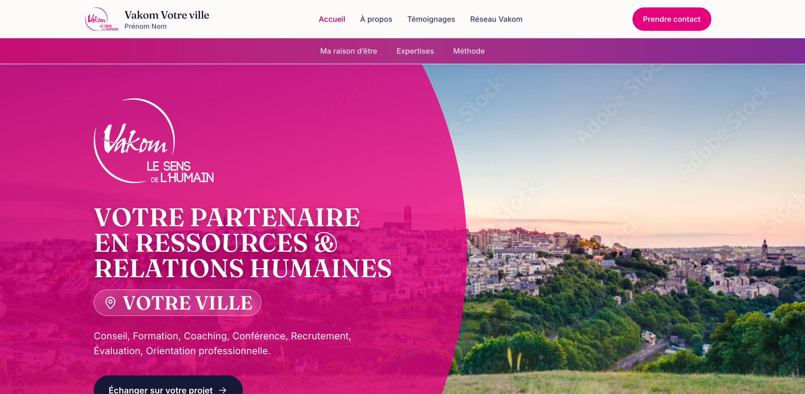
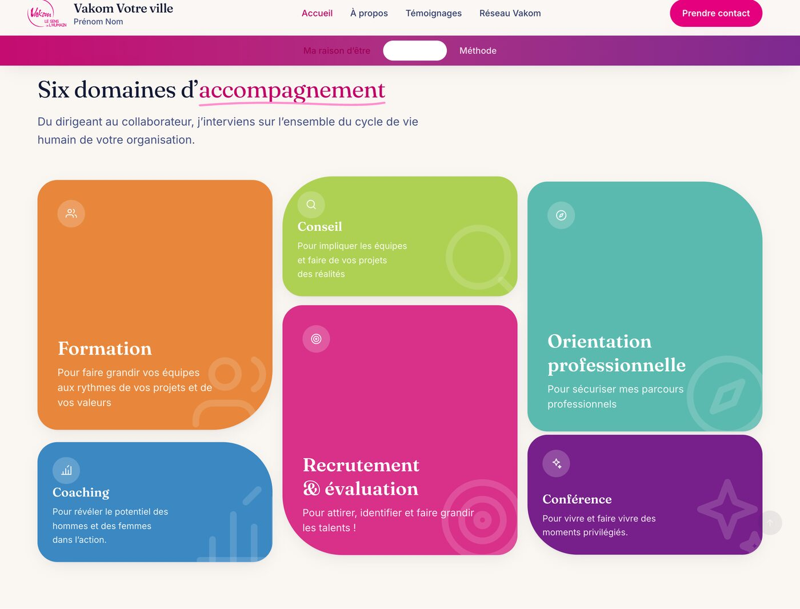
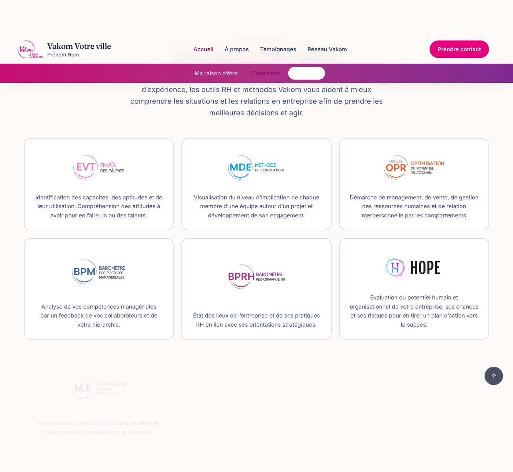
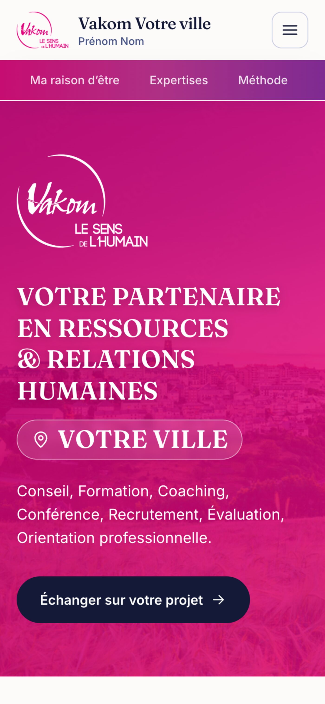

Une page d'accueil guidée
Une seule page avec une barre d'ancres : raison d'être, six domaines d'accompagnement, solutions RH Vakom.
Site en cours de création
J'ai conçu et développé le site d'un consultant en ressources et relations humaines du réseau Vakom : expertises, solutions RH, présentation et prise de contact. Un projet client, en cours de réalisation.

Donner à un consultant du réseau Vakom une présence en ligne claire et locale, dans l'esprit des sites des autres cabinets du réseau, tout en affirmant son ancrage dans sa ville.
Une seule page avec une barre d'ancres : raison d'être, six domaines d'accompagnement, solutions RH Vakom.
Chaque expertise et chaque solution renvoie vers les pages officielles du réseau national.
Les présentations et témoignages vivent dans un simple fichier Markdown, modifiable sans toucher au code.
Conçu pour le téléphone, adapté à la tablette et au poste de travail, sans défilement horizontal.
Captures de la version actuelle, anonymisées. Les textes de démonstration seront remplacés par le contenu définitif.



Un site vitrine en construction : la structure et le design sont posés, le contenu définitif arrive.
Un site statique rapide et testé, déployé sur GitHub Pages pendant la phase de construction.
L'aperçu en ligne est mis à jour au fil du développement.